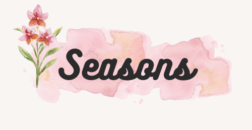
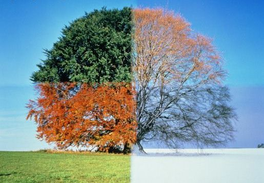

A season is a division of the year[1] based on changes in weather, ecology, and the number of daylight hours in a given region. On Earth, seasons are the result of the axial parallelism of Earth's tilted orbit around the Sun.[2][3][4] In temperate and polar regions, the seasons are marked by changes in the intensity of sunlight that reaches the Earth's surface, variations of which may cause animals to undergo hibernation or to migrate, and plants to be dormant. Various cultures define the number and nature of seasons based on regional variations, and as such there are a number of both modern and historical cultures whose number of seasons varies.
The Northern Hemisphere experiences most direct sunlight during May, June, and July, as the hemisphere faces the Sun. The same is true of the Southern Hemisphere in November, December, and January. It is Earth's axial tilt that causes the Sun to be higher in the sky during the summer months, which increases the solar flux. However, due to seasonal lag, June, July, and August are the warmest months in the Northern Hemisphere while December, January, and February are the warmest months in the Southern Hemisphere.

In temperate and sub-polar regions, four seasons based on the Gregorian calendar are generally recognized: spring, summer, autumn (or fall), and winter. Ecologists often use a six-season model for temperate climate regions which are not tied to any fixed calendar dates: prevernal, vernal, estival, serotinal, autumnal, and hibernal. Many tropical regions have two seasons: the rainy, wet, or monsoon season and the dry season. Some have a third cool, mild, or harmattan season. "Seasons" can also be dictated by the timing of important ecological events such as hurricane season, tornado season, and wildfire season.[citation needed] Some examples of historical importance are the ancient Egyptian seasons—flood, growth, and low water—which were previously defined by the former annual flooding of the Nile in Egypt.
Tropical dry season in Maharashtra, India
Tropical wet season/monsoon in Maharashtra, India
Seasons often hold special significance for agrarian societies, whose lives revolve around planting and harvest times, and the change of seasons is often attended by ritual. The definition of seasons is also cultural. In India, from ancient times to the present day, six seasons or Ritu based on south Asian religious or cultural calendars are recognised and identified for purposes such as agriculture and trade.